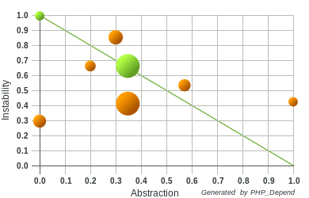
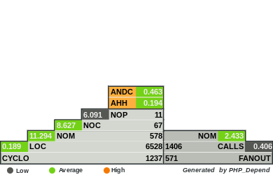

Generates a large set of software metrics, that can be used to measure the quality of a software project. They help to identify the parts of an application where a code refactoring should be applied.


PHP Mess Detector
Scans PHP source code (based on given rules) and looks for potential problems such as:
Possible bugs
Suboptimal code
Overcomplicated expressions
Unused parameters, methods, properties
PHP_CodeSniffer
Detects violations of a defined set of coding standards.
PHP Copy/Paste Detector
Scans a PHP project for duplicated code.
Unit tests
“Only two kinds of code deserve TDD:
* Code that you plan to keep
* Code that needs to work.”
-- Tim Ottinger
Generate documentation
phpDox is a documentation generator for PHP projects. Uses DocBlock annotations. Generates HTML.
What is Jenkins
Continuous Integration Software written in Java
Gives us a way to test code / functionality changes as they are pushed to VCS
Reporting - successful / failed builds based on static analytics tools and unit tests
Helps with managing deployments (no need to have production/qa server credentials to deploy a build)
Has lots of plugins to connect it to VCS, Selenium, Ant/Phing, notifications...
Can build a master/slave configuration, so you can test on different php versions/web servers/operating systems, etc.
Jenkins PHP Project Setup
http://jenkins-php.org/
Install the required Jenkins plugins and PHP tools
Orchestrate the PHP tools using Apache Ant
Configure the PHP tools for use with Jenkins job template